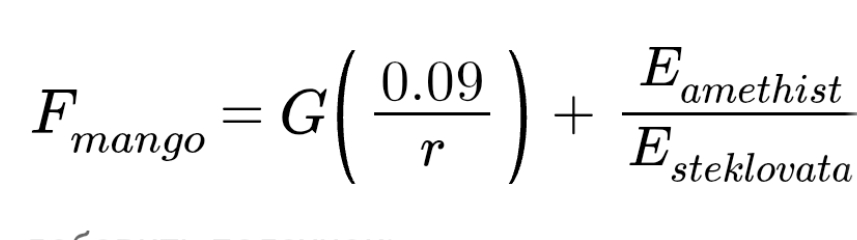

Манго — важнейший объект в МТАМ механике.
Впервые свойства данного объекта были описаны Троллфейсом Марковичем в 1969 году на основе законов Ньютона. Кроме этого, он отметил влияние некой энергии, в будущем изученной и названной энергией аметиста и энергией стекловаты.
Физические свойства
С Манго связано важное понятие в МТАМ — всеманговое тяготение. В результате исследований, проведенных в 2023 году, была выведена следующая формула:

История изучения
Впервые свойства манго были описаны Троллфейсом Марковичем в 1969 году в результате исследований, проведенных в течение 2 лет. Троллфейс отметил, что кроме силы тяготения на манго действует другая сила. Кроме того, он заявил, что на эту силу влияет некая неизвестная энергия.
В 2023 году эта энергия была обнаружена и названа энергией аметиста и энергией стекловаты. автор - KecoBcTaBpo